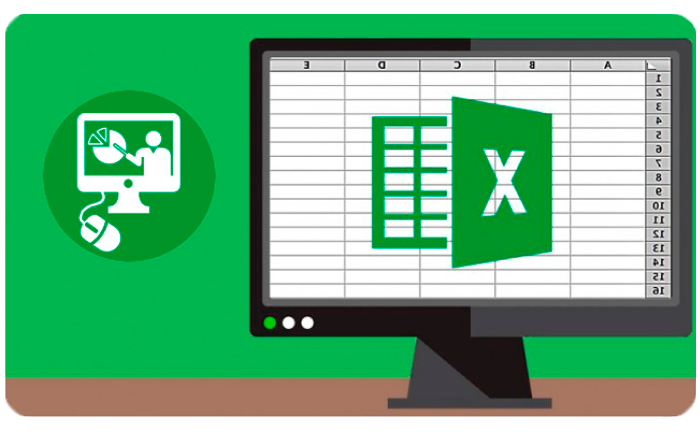
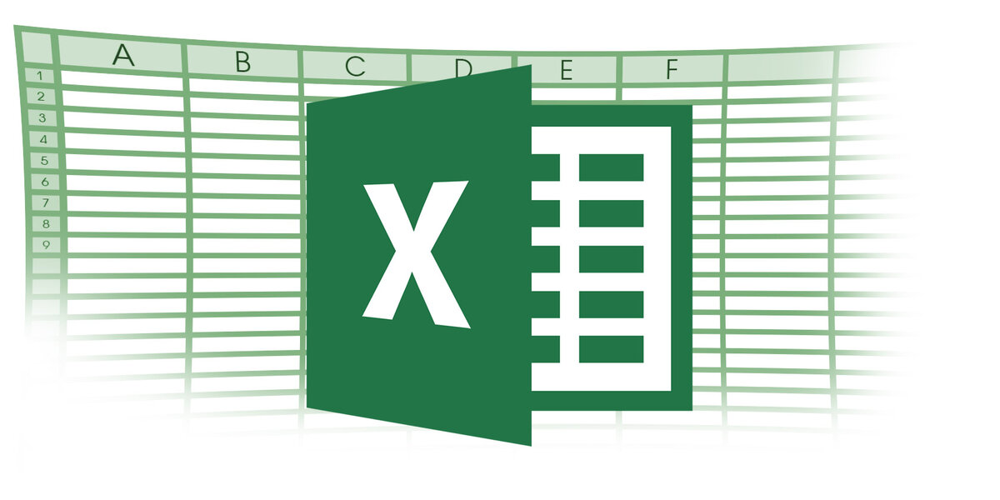

ЗДРАВСТВУЙТЕ
Добро пожаловать на сайт, посвящённый информационным системам и технологиям! Здесь вы найдете информацию о современных Smart-устройствах, способах хранения данных, антивирусах, офисном ПО (Word, Excel), создании презентаций и работе с текстовыми и табличными процессорами. Узнайте больше!

2. Работа с офисным ПО
Текстовый процессор Оглавления, стили, рисунки, формулы Создание презентаций Табличный процессор


4. Занятия с MS Excel
Практическое занятие MS Excel №1 Создание и редактирование электронных таблиц Практическое занятие MS Excel №2 Использование встроенных функций и операций ЭТ Практическое занятие MS Excel №3 Использование логических функций Практическое занятие MS Excel №4 Построение диаграмм и графиков
